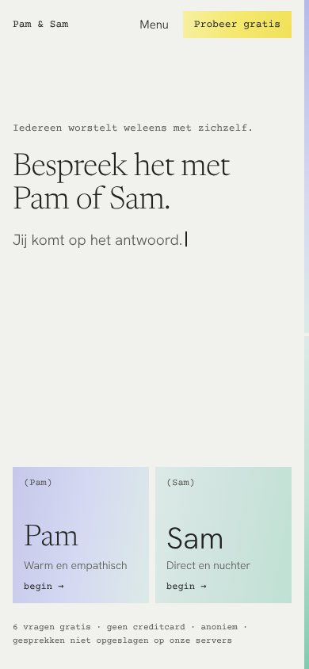
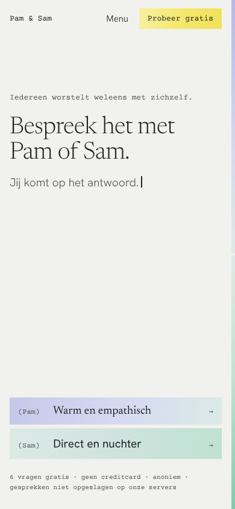
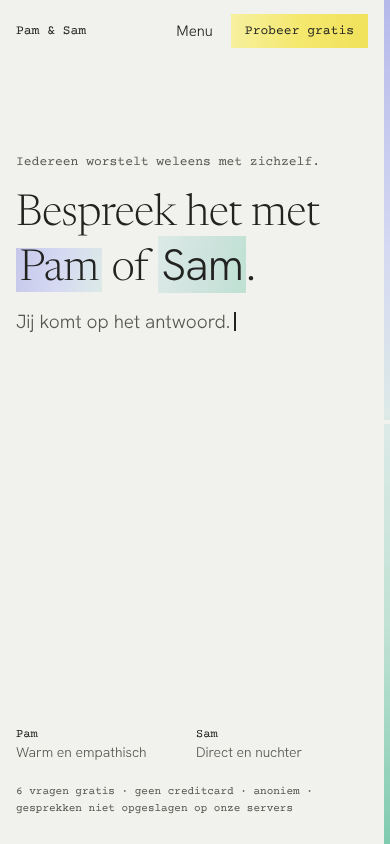

"Probeer gratis" staat alleen nog in het menu. De zin staat bovenaan, de keuze voor Pam of Sam onderaan het eerste scherm, waar je duim hem bereikt.

Pam en Sam als twee gelijke tegels naast elkaar, met de naam groot in de eigen letter. Het duidelijkst als keuze.

Twee lage regels onder elkaar. Het rustigst en het dichtst bij het register.

Geen blokken: "Pam" en "Sam" in de kop zelf zijn gemarkeerd en aan te tikken. Het minst druk, maar je moet zien dat het knoppen zijn.